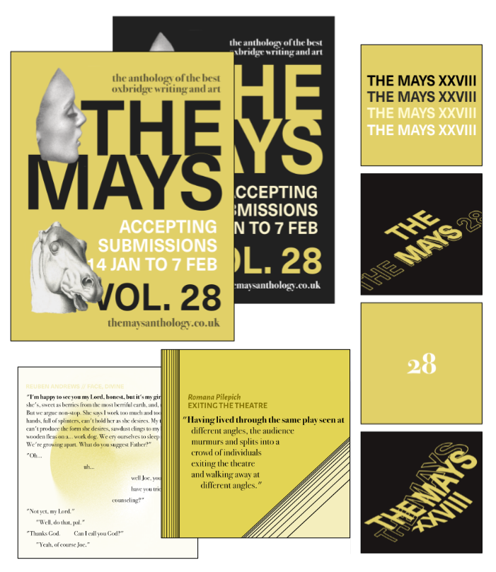
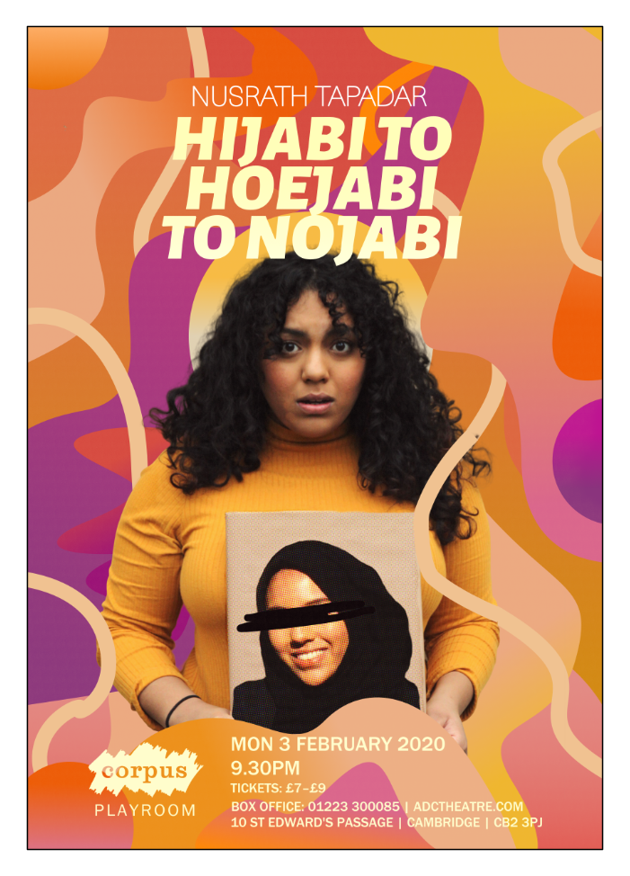

LINDA
JIEWEI
YU
Currently reading History and Politics at the University of Cambridge (exp. graduation 2021), memorising Tang poetry, and evangelizing about Married to Medicine.
SKILLS 2D Design & Video (Illustrator, InDesign, Photoshop, After Effects and equivalents) | Data Analysis in R | Web design in HTML5/CSS (this very site) | Mandarin speaker | Jet bridge operator | Figure skater
-
Portfolio
-
2019-2020 Cover design and 200 page interior for volume 28 of the Cambridge and Oxford literary and art journal The Mays.

Publicity visuals to solicit submissions utilising art from the previous issue.
 -
2020 Poster and flyers created for the ADC play Chalk.

-
2020 Poster and logo created for the Cambridge Short student film festival.

-
2020 Poster the ADC Theatre standup show Hijabi to Hoejabi to Nojabi.
 -
2019-2020 Design and materials for a theatre company focused on funding and producing diverse shows.

-
2019 Stamp themed print campaign for the ADC Theatre stage show Second Generation. Sticker set (instead of flyers) and A1/A3 posters.
-
Condensed compilation of illustration work, some personal and some created for op-ed illustrations in the newspaper Varsity.


-
2015-2017 Sample of print advertising work created for agents at Alain Pinel Realtors based on a standard house style.

-
2012-2014 Designed various issues of the Duke Unversity Chronicle as a member of the design staff along with writing and copyediting articles as a staff editor.
> Narrative feature article written about a late night cab driver.
> News article on a pastor-led protest
CONTACT lindajwyu [at] gmail.com